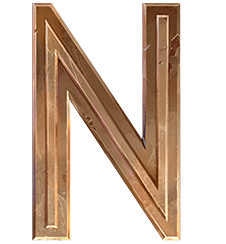
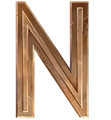

Género:
- Animado
- Drama
- Acción
- Comedia
- Fantasía


 


La historia se desarrollará en las siguientes dos ciudades: Piltover y Zaun. Las tensiones entre estas dos
ciudades se desbordan con la creación de Hextech, una forma en que cualquier persona es capaz de controlar
la energía mágica. En Zaun, una nueva droga transforma a los humanos en monstruos. La rivalidad que existe
entre estas dos ciudades divide a familias y amigos, ya que ‘Arcane’ da vida a las relaciones que dan forma
a algunos de los famosos campeones de League of Legends como Vi, Jinx, Caitlyn, Jayce, Viktor, Ekko, Singed
y Heimerdinger.
Aunque Arcane se centra solo en estas dos ciudades, estas pertenecen al mundo Runaterra.
Piltover es la ciudad académica y científica, mientras que Zaun es todo lo contrario. Muchas de las personas
más inteligentes de Runaterra comenzaron en Zaun, pero una educación mucho más estricta ha colocado el
progreso sobre la moralidad en la mente de muchos.
Rol: Tirador.
Jinx, una criminal perturbada e impulsiva de Zaun, vive para sembrar el
caos sin importarle las consecuencias. Provoca las explosiones más ruidosas y cegadoras con su
arsenal de armas letales para dejar un rastro de terror y destrucción a su paso. Jinx aborrece el
aburrimiento y disfruta dejando su peculiar impronta allá donde va.
Rol: Luchador.
Otra delincuente en las perversas calles de Zaun, Vi es una mujer
impulsiva e imponente con muy poco respeto por las figuras de la autoridad. Tras crecer sola, Vi
desarrolló y perfeccionó sus instintos de supervivencia, así como un áspero sentido del humor lleno
de malicia. Ahora trabaja con los Guardianes de Piltover para mantener la paz y se vale de sus
poderosos guanteletes hextech, que pueden golpear a través de las paredes y de los sospechosos con
la misma facilidad.
Rol: Tirador.
Reconocida como su mejor pacificadora, Caitlyn es también la mejor arma de
Piltover para librar a la ciudad de sus elusivos elementos criminales. A menudo trabaja con Vi, y
actúa como un frío y eficiente contrapunto para la naturaleza más impetuosa de su socia. A pesar de
que lleva un rifle hextech único, el arma más poderosa de Caitlyn es su inteligencia superior, lo
que le permite colocar trampas elaboradas para cualquier infractor de la ley lo suficientemente
necio como para operar en la Ciudad del Progreso.
Rol: Luchador.
Es un brillante inventor que ha jurado defender con su vida a
Piltover y a su irreductible afán de progreso. Empuñando su martillo hextech transformable, Jayce
hace uso de su fuerza, coraje y considerable inteligencia para proteger su ciudad natal. Aunque
Piltover lo venera como a un héroe, la atención que el heroísmo supone no ha sido de su agrado.
Con todo, Jayce alberga buenas intenciones, e incluso aquellos que envidian sus dotes innatas
agradecen la protección que brinda a la Ciudad del Progreso.
Rol: Mago.
El heraldo de una nueva era tecnológica, ha consagrado su vida al progreso de
la humanidad. Es un idealista que busca llevar al pueblo de Zaun a un nuevo nivel de comprensión y
cree que la humanidad solo podrá alcanzar su máximo potencial abrazando una evolución gloriosa de
la tecnología. Con su cuerpo mejorado por el acero y la ciencia, no ceja en su búsqueda de este
futuro brillante.
Rol: Asesino.
Un prodigio surgido de las implacables calles de Zaun, manipula el tiempo
para sacar ventaja de todas las situaciones. Con una máquina de su invención llamada Dispositivo Z,
explora las distintas posibilidades de la realidad hasta alcanzar el momento ideal. Aunque adora su
libertad, si algo amenaza a sus amigos, hará lo que sea para defenderlos. Para quien no sepa quién
es este muchacho, Ekko parece conseguir lo imposible a la primera, una y otra vez.
Rol: Alquimista.
Singed es un alquimista zaunita de intelecto sin igual que se ha
entregado en cuerpo y alma a sobrepasar los límites del conocimiento, sin importarle el precio que
tenga que pagar. ¿Acaso su locura se rige por pautas? Sus brebajes no suelen fallar, pero, para
muchos, en Singed ya no queda rastro de humanidad, pues deja una estela tóxica de miseria y terror
tras de sí.
Rol: Mago.
El profesor Cecil B. Heimerdinger, un científico yordle excéntrico pero
brillante, es considerado una de las mentes más innovadoras y uno de los inventores más admirados
de la historia de Piltover. Tiene una dedicación incesante en su trabajo hasta el punto de la
obsesión y desea responder a los interrogantes más inescrutables del universo. Aunque sus teorías
suelen parecer opacas y esotéricas, Heimerdinger ha creado algunas de las máquinas más milagrosas
(por no decir letales) de Piltover y trastea constantemente con sus inventos para hacerlos todavía
más eficientes.